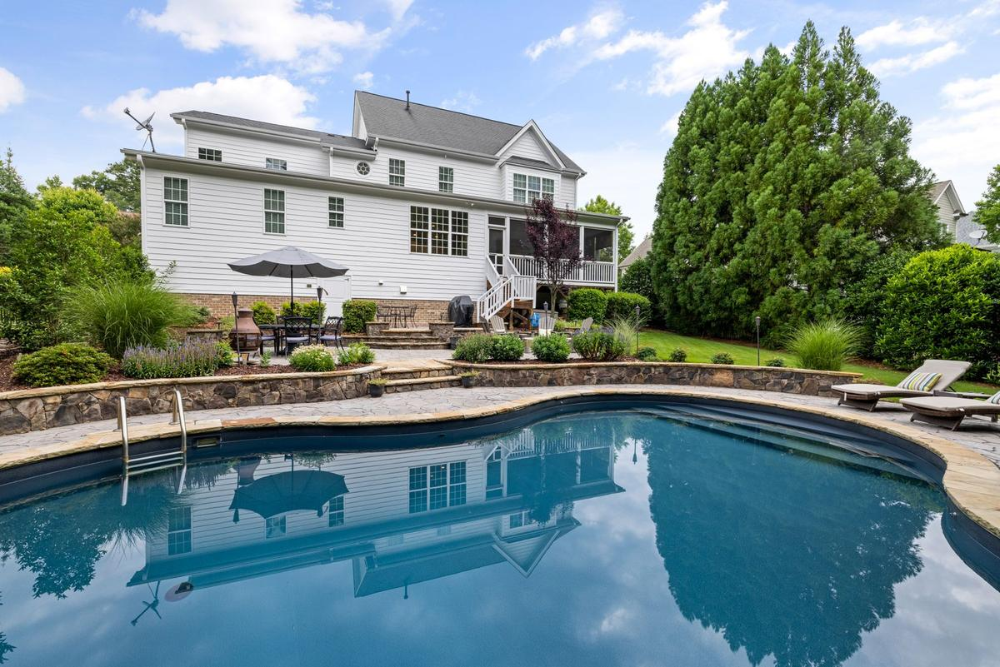

If you're staring at an old swimming pool you're tired of paying to maintain, here's the short answer on pool removal in Columbia, MO: most inground jobs run $4,000 to $8,000 for a partial fill-in and $9,000 to $16,000 for a full removal. Above-ground pools are far cheaper. The right choice comes down to your budget and whether you ever want to build on that spot.
I'm Chris Kurtz, owner of Atlas Excavation & Demolition. We tear out pools across Columbia, MO and the rest of Mid-Missouri, and this post lays out exactly how it works: the two removal methods, what each costs, the permits Boone County requires, and the disclosure issue most homeowners don't see coming.
Quick Answer: Pool removal in Columbia, MO comes in two forms. Partial removal breaks up the top of the shell, drills the bottom for drainage, and fills it in for roughly $4,000 to $8,000. Full removal hauls out the entire shell and backfills with clean dirt for about $9,000 to $16,000, leaving a buildable yard. Above-ground pools run $1,500 to $4,000. A demolition permit is required, and partial removals must be disclosed when you sell. Call Atlas at (573) 234-6641 for a free on-site walkthrough.
In This Guide:
Full vs. Partial Pool Removal
Almost every pool removal decision comes down to these two methods. They cost different amounts and they leave your yard in a different state, so it's worth understanding both before you call anyone.
Partial removal (also called a fill-in or abandonment) is the cheaper, faster route. We drain the pool, break up the top two to three feet of the walls, and drill holes through the bottom so groundwater can drain instead of pooling. The broken concrete goes into the hole, gets topped with clean soil, and the whole thing is compacted and graded flat. The catch is that material stays buried, so the spot isn't considered build-ready and you'll have to disclose it when you sell.
Full removal takes everything out. The entire shell, the floor, the deck, the rebar, all of it gets broken up and hauled off. Then we backfill the hole with clean, compacted dirt and grade it. It costs more and takes longer, but you end up with a clean, buildable yard and nothing unusual to disclose. If you ever want a shop, an addition, or just normal lawn with no buried surprises, this is the one.
Quick way to decide: if you're selling soon and just want the liability and upkeep gone, partial removal usually makes sense. If you're staying, or you want the space fully usable for building, full removal is worth the extra cost.
What Pool Removal Costs in Mid-Missouri
Here are the real ranges we see on pool jobs around Columbia. Pool material is the biggest swing after the full-versus-partial choice. Concrete and gunite take more work to break up than a vinyl-liner pool, and fiberglass shells come with their own handling.
| Removal Type | What It Covers | Typical Cost |
|---|---|---|
| Above-ground pool | Drain, disassemble, haul off, basic cleanup | $1,500 to $4,000 |
| Partial inground (fill-in) | Top broken up, bottom drilled, filled, compacted, graded | $4,000 to $8,000 |
| Full inground removal | Entire shell removed and hauled, clean backfill, graded | $9,000 to $16,000 |
| Pool deck / concrete only | Surrounding concrete deck broken up and hauled | $1,500 to $5,000 |
A few things move the number inside those ranges. Backyard access is a big one. If we can get a machine and a dump truck close to the pool, the job goes fast. If everything has to come out through a narrow side gate by hand, that adds labor. Water disposal, the size of the pool, and how much concrete decking surrounds it all factor in too. Most pools have a concrete deck, and breaking that out is its own line item, which is why we often pair the work with concrete removal.
The Pool Removal Process, Step by Step
Here's what pool removal actually looks like once you've decided to move forward, so there are no surprises in your backyard.
- Walkthrough and permit. I look at the pool, the material, and your access, give you a flat written price, and pull the demolition permit with the city.
- Drain the water. Thousands of gallons have to go somewhere legal. We dechlorinate and discharge it the way the city requires, not into a storm drain.
- Disconnect utilities. Power to the pump and lights gets cut, and any gas or water lines to the pool are disconnected and capped.
- Demolish the shell. For a partial, we break the top down and drill the bottom. For a full removal, the entire shell comes out.
- Haul or bury. Full removal means the material is loaded and hauled off. Partial means clean rubble goes back in the hole.
- Backfill and compact. Clean soil is added in layers and compacted so the ground doesn't sink later. This step is where shortcuts cause settling.
- Grade and clean up. We grade the area flat, clean up the work zone, and leave the yard ready for grass or whatever's next.
The compaction step is the one to watch with any contractor. Mid-Missouri's heavy clay has to be filled and packed in lifts, not just dumped, or you get a low, soggy spot in the yard a year later. If a build is going on that spot, we coordinate with site preparation so the pad is graded and ready.
Tired of Babysitting a Pool You Don't Use?
Atlas gives you a flat written price after a free on-site walkthrough, pulls the permit, and handles the water and debris. No surprise fees.
Get Your Instant Estimate Or Call (573) 234-6641Permits and Local Rules in Columbia and Boone County
Pool removal in Columbia requires a demolition permit, and because you're disconnecting plumbing and electrical, there can be related sign-offs. Permit fees are usually modest, often in the $100 to $500 range, but skipping the permit can stall a future home sale when it turns up missing. You can confirm the current requirements with the City of Columbia building and site development office, or we'll just handle it for you.
The piece people forget is the water. A backyard pool holds thousands of gallons, and you can't legally dump chlorinated water into the street or a storm drain. It has to be dechlorinated and discharged the right way. Missouri DNR sets the standards for this kind of discharge, and you can read more on the Missouri DNR water protection program page. Atlas handles the draining and disposal as part of the job so you're not figuring it out with a garden hose.
We remove pools across Columbia, Ashland, Harrisburg, Hallsville, Boonville, Fulton, Centralia, Rocheport, and the rural parts of Boone, Audrain, Callaway, Cole, Howard, Cooper, and Moniteau counties. Each jurisdiction handles permitting a little differently, and knowing those differences is part of the job.
The Disclosure Issue Most Homeowners Miss
This is the part that surprises people, so I bring it up before we start. If you do a partial removal and fill the pool in, you have to disclose it when you sell the house. Missouri sellers complete a disclosure statement, and buried rubble from a filled-in pool is exactly the kind of thing that belongs on it.
Why does it matter? Buried material can settle over time and it limits what can be built on that spot. Buyers and their inspectors want to know it's there, and a surprise can sink a deal late. None of that is a reason to avoid partial removal, it's just a reason to go in with your eyes open. If a clean, no-questions yard matters to you, full removal avoids the issue entirely. Either way, we document exactly what was done so you have a clear record.
Why Remove an Old Pool at All
If you're on the fence, the property owners we help usually have one of a few reasons.
- Upkeep and cost. A pool you don't use is still chemicals, a pump, repairs, and higher insurance, year after year.
- Safety and liability. An old or unfenced pool is a real risk, especially with kids or grandkids around, and insurers know it.
- A neglected pool is a swamp. A pool that's stopped being maintained turns into standing water, a mosquito factory, and an eyesore fast.
- You want the yard back. Pulling the pool opens the space for a garden, a shop, an addition, or just lawn the kids can run on.
- Selling the house. Plenty of buyers see a pool as a liability, not a perk. Removing it can widen your buyer pool.
Frequently Asked Questions
How much does it cost to remove an inground pool in Columbia, MO?
In Columbia, MO and across Mid-Missouri, removing an inground pool usually runs $4,000 to $8,000 for a partial removal and $9,000 to $16,000 for a full removal. The spread depends on the pool material, how easy it is to get equipment into the backyard, how the water and debris get disposed of, and whether you want the spot fully buildable afterward. Concrete and gunite pools cost more to break up than vinyl-liner pools. An above-ground pool is much cheaper, usually $1,500 to $4,000. The only way to get a firm number is to look at the pool and your access, which we do for free.
What is the difference between full and partial pool removal?
Partial removal, sometimes called fill-in or abandonment, breaks up the top two to three feet of the pool, drills holes in the bottom so water drains through, and fills the shell with the rubble plus clean soil, all compacted and graded. It is cheaper and faster, but the buried material means the ground is not considered build-ready and you have to disclose it when you sell. Full removal takes out the entire shell, hauls all the material off, and backfills with clean, compacted dirt. It costs more but leaves a clean, buildable yard with no disclosure baggage. Which one is right depends on your budget and what you want to do with the space.
Do I need a permit to remove a pool in Columbia, MO?
Yes. Pool removal in Columbia and Boone County requires a demolition permit, and because draining and disconnecting a pool involves plumbing and electrical, there can be related sign-offs too. The city also cares about where the water goes, since you cannot just dump thousands of gallons of chlorinated water into the street or a storm drain. Permit fees are usually modest, often in the $100 to $500 range, but the paperwork and the proper water disposal are easy to get wrong. Atlas pulls the permit and handles the disposal as part of the job so you are not chasing it yourself.
Do I have to tell buyers I filled in a pool?
If you did a partial removal, yes, you should disclose it. Missouri sellers fill out a disclosure statement, and a filled-in pool is exactly the kind of buried condition that belongs on it. Buried rubble can affect future construction and can settle over time, so buyers and their inspectors want to know it is there. This is the main reason some homeowners choose full removal instead. With the entire shell gone and clean compacted fill in its place, there is nothing unusual to disclose and the yard shows like any other. We document the work either way so you have a record of exactly what was done.
How long does it take to remove a swimming pool?
Most pool removals around Columbia take two to five days of actual work once we start, though permitting and scheduling add lead time on the front end. An above-ground pool can come out in a day or two. A partial inground removal is usually two to four days. A full removal, where the whole shell comes out and gets hauled off, can run four days to a week or more depending on the pool size, the material, and how tight backyard access is. Wet weather can push a job, since Mid-Missouri clay does not compact well when it is soaked. We give you a realistic window after we see the site.
Get a Real Price From Atlas
If you've got a pool in Columbia or anywhere in Mid-Missouri that needs to go, we're glad to come look at it and put a flat written price in front of you. No pressure, no surprise fees.
- Phone: (573) 234-6641
- Email: hello@deployatlas.com
- Online: Instant estimate form
For related reading, see our demolition cost guide for Columbia, Missouri, our breakdown of the demolition permit process in Columbia, MO, and our overview of demolition services in Mid-Missouri.